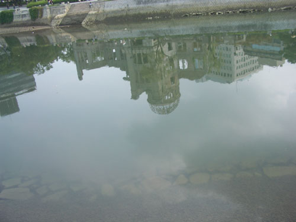
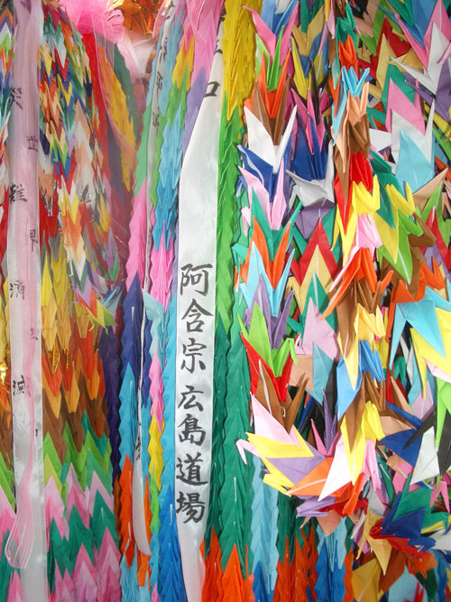
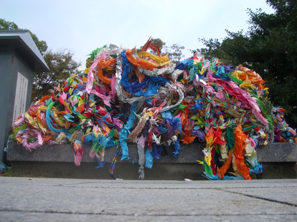
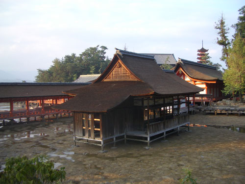
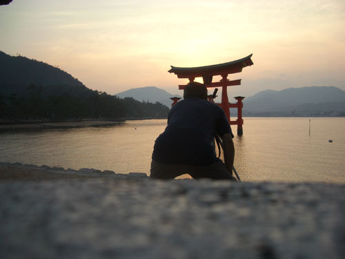

| < | > |
| Hiroshima | [2004-10-05 23:00] |
| We woke to a humid hazy day. Five floors up, in a neglected little apartment, with big crows calling across a jumble of rooftops. Ha! Ha! Ha! We would take it easy today. Breakfast at Andersens. Then a stroll through the memories of a big horrible tragic vanished death scene.  Sadako died of leukemia. While she died she made origami cranes. Towards the end they got smaller and smaller. She folded them with a pin. Then after she died everyone joined in.  I knew this was what I wanted to see in Hiroshima. A good sentimental idea, like a delicate artificial flower, persists and persists, despite its artificiality.  The official bomb museum was crowded with attentive shuffling readers. A little two-year-old pointing with chubby fingers at a model of an obliterated city. A torn faded school uniform that had been cut from melted flesh. A little animated diagram of how radiation plays chop and change with chromosomes. On the way back out to the sunshine we watched a some video testimonies. One lady said emphatically, "That bomb ruined my life." While another wistfully remembered, "I looked up and saw this beautiful white light." * In the afternoon Yukiko took us out to Miyajima where we wandered through wandering deer, tourist shop land, up past typhoon damage to a sad little teahouse cafe, then back down past the No theatre (closed for repairs) talking idly of how time had flown by since we first met 10 years ago.  As we sat and watched the sun set Yukiko remembered how as a child she had gone swimming on the now-built-up coast across the bay. Time swallows everything. It seems to me that the bomb was just history in miniature.  |
|